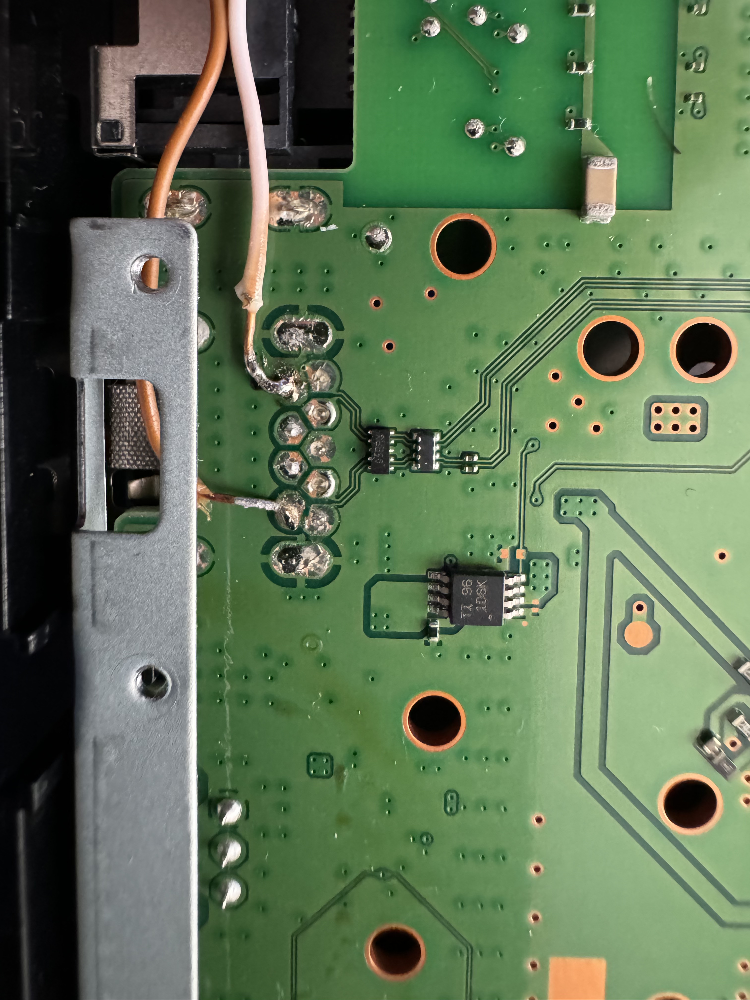

Guide for integrating LuckFox on PS4 Pro
Required Materials:
- Soldering iron
- Solder
- Wire (I recommend flexible stranded wire, I use 0.75mm diameter including plastic insulation)
- Thermal tape to insulate the wires and chip to avoid shorts
- LuckFox Pico (I used this model because of its size, allowing integration in the space I found)
- MicroSD card of 8GB or higher
For the board configuration, refer to the repository: https://github.com/0x1iii1ii/PPPwn-Luckfox. Note that when using this board, ethernet pins 4, 5, 7, and 8 need to be connected to GND for the router to recognize it, as seen in issue https://github.com/0x1iii1ii/PPPwn-Luckfox/issues/7
Regarding the ethernet connection, I apologize for not being able to maintain the color coding in the photos, I didn't have enough cables. For the PPPoE connection used by the PPPwn exploit, only 10/100 ethernet is needed, so 4 wires are sufficient. This diagram shows the pins we need.
As you can see, only TxD+, TxD-, RxD+, and RxD- are needed, and these should be connected to the LuckFox board on pins TxP, TxN, RxP, and RxN respectively from the following diagram.
For power, although the board can be powered via USB-C, it is also possible to do so via the VBUS and GND pins, corresponding to numbers 40 and 38 in the previous diagram.
With the connections clarified, the only thing left is how to route the cables so they don't interfere with the metal plates or plastic covers.
Disassembling the Console
There are thousands of tutorials on YouTube for disassembling the console. As a tip, if you want to keep your warranty stickers intact, heat them with a hot air gun, and they will come off without damage. It is also advisable to change the thermal paste since we have the console disassembled and the board separated from the heatsink.
These images are taken from the internet, ignore the condition of the motherboard, the important thing is what is marked in each case with the red circles.

Side B
On side A, we have the ethernet connections, following the diagram shown earlier it would look like this (these are the images I took of my console):
I secured the wires in this area with hot glue so they wouldn't move and thus not interfere with the metal plate above the motherboard.
All that's left is to get power for the LuckFox chip. We will take this from the rear USB marked in the red circle on side B of the motherboard. The connections would look like this:

To properly place the wires, we need to pass them under the metal plate as indicated in this diagram:
The red arrow indicates where the wires enter the rear of the metal plate, the green lines indicate where the wires are hidden under the metal plate.
This is the real image of how it looked in my console:
At the back, the wires pass close to the edge of the power supply bay as seen in this image:
The wires pass next to the hard drive tray as shown below:
In this image, you can see the connections closer to the LuckFox board and also the position where it will be located:
I also covered the board and its connections with thermal tape to avoid any unwanted contact that could cause a short circuit:
Finally, the final installation would look like this with the top metal plate already in place.
Guía para la integración de LuckFox en PS4 Pro
Materiales necesarios:
- Cautin/Soldador de estaño
- Estaño
- Cable (recomiendo que sea flexible de hilos, el que yo uso tiene 0.75mm de diámetro con el revestimiento de plástico incluido)
- Cinta térmica para aislar los cables y el chip, para evitar cortos
- LuckFox Pico (En mi caso he utilizado este modelo por el tamaño, ya que permite la integración en el hueco que he encontrado)
- Tarjeta microSD de 8GB o superior
Para la configuración de la placa se puede referir al repositorio: https://github.com/0x1iii1ii/PPPwn-Luckfox. Como apunte, al utilizar esta placa es necesario que los pines ethernet 4, 5, 7 y 8 estén conectados a GND para que el router lo reconozca, como se puede ver en el issue https://github.com/0x1iii1ii/PPPwn-Luckfox/issues/7
En lo que respecta a la conexión ethernet siento no haber podido mantener el código de colores en las fotos, no disponía de los cables suficientes. Para la conexión PPPoE que utiliza el exploit PPPwn solo necesitamos la conexión ethernet 10/100, por lo que 4 cables son suficientes. En este esquema se puede ver los pines que necesitamos.
Como se puede ver, solo son los TxD+, TxD-, RxD+ y RxD-, estos deben ir conectados a la placa LuckFox en los pines TxP, TxN, RxP y RxN respectivamente del siguiente esquema.
Para la alimentación, pese a que la placa se puede alimentar por USB-C, también es posible hacerlo mediante los pines VBUS y GND, correspondientes a los números 40 y 38 del esquema anterior.
Con las conexiones aclaradas, lo único que falta es cómo pasar los cables para que no interfieran con las placas metálicas ni con las carcasas de plástico.
Desmontaje de la consola
Para desmontar la consola hay miles de tutoriales en youtube, como consejo, si quieres mantener tus pegatinas de garantía intactas caliéntalas con una pistola de aire caliente y se despegarán sin daños. También es recomendable cambiar la pasta térmica ya que tenemos la consola demontada y separamos la placa del disipador.
Estas son unas imágenes tomadas de internet, ignorardel estado de la placa base, lo importante es lo que se marca en cada caso en los círculos rojos.
Cara B
En la cara a tenemos las conexiones ethernet, siguiendo el esquema mostrado anteriormente quedaría de la siguiente forma (estas son las imágenes que tomé yo de mi consola):
Yo sujeté los cables en esta zona con silicona caliente para que no se movieran y así no entorpezcan a la placa metálica que lleva por encima la placa base.
Ya solo quedaría obtener la alimentación del chip LuckFox. Esta la sacaremos del usb trasero que se marca en el círculo rojo de la cara b de la placa base. Las conexiones quedarían así:
Para colocar bien los cables tenemos que pasarlos por debajo de la placa metálica como se indica en este esquema:
La flecha roja indica el lugar por donde entran los cables para la parte posterior de la placa metálica, las líneas verdes indican por donde van los cables ocultos debjao de la placa metálica.
Esta es la imagen real de como quedó en mi consola:
Por la parte de atrás los cables pasan pegados al borde del hueco de la fuente de alimentación como se ve en esta imagen:
Los cables pasan por al lado de la bandeja del disco duro como se muestra a continuación:
En esta imagen se ven las conexiones más de cerca a la placa LuckFox y también la posición donde irá situada:
También he cubierto la placa y sus conexiones con cinta térmica para evitar cualquier tipo de contacto no deseado que pudiese ocasionar un corto:
Finalmente, la instalación final quedaría así con la placa metálica superior ya en su sitio.